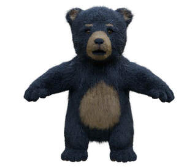
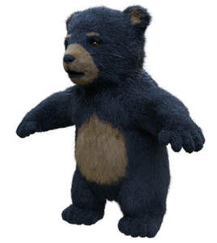
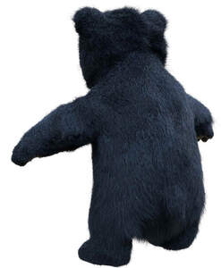
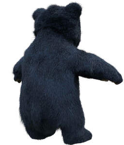
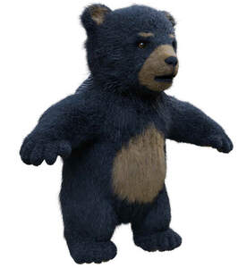

Trade Mark Journal No.2025/028 11 July 2025
UK00004194068 24 April 2025 (16,18,28,35)






3 Dimensional
- Class 16
- Printed matter, books, magazines, printed publications, catalogues, leaflets, business cards, and booklets; calendars; bookmarks; greeting cards; postcards; posters; newsletters; notebooks; printed timetables; photographs; keepsakes made of paper or card, souvenir programmes, mementos made of paper or card; colouring books; activity books; stickers, sticker albums and sticker books; stationery; wrapping paper; art prints; graphic art reproductions and prints; paintings.
- Class 18
- Bags; carrying bags; reusable shopping bags; tote bags; purses; luggage tags/baggage tags; umbrellas; umbrellas for children.
- Class 28
- Games, puzzles and playthings, jigsaw puzzles, pre-school educational toys, card games, fidget toys, toy mobiles, snow globes.
- Class 35
- Retail services connected with the sale of surplus stocks from previous seasons collections for men, women and children, namely clothing, sportswear, shoes, travelling sets (leather goods), travel hair dryers, purses, handbags, scarves, hats, watches, sunglasses, belts and umbrellas, cushions, throws, curtains, blinds, household linen, curtains, rugs, table runner, duvet covers, bedsheets, bedding sets, pillows, towels, picture frames, candles, hurricane lamps, reed diffusers, jewellery boxes, watch boxes, lingerie, jewellery; Retail services in relation to badges, keyrings, jewellery, ornaments, printed matter, books, greetings cards, stickers, stationery, bags, clothing, footwear, headgear, toys, games and playthings; Business operation, management, administration and promotion of commercial premises, offices and retail and leisure units; Operation and administration of retail and leisure units, retail and leisure complexes, shopping malls, shopping arcades, shopping centres and retail parks; The bringing together for the benefit of others of a variety of retail outlets connected with one or more of the following types of goods, namely, beauty products (namely grooming accessories, cosmetics and body care products), toiletries, and exercise equipment), electric appliances for use in household kitchens, electrical appliances for use in relation to household laundry, household utensils, household containers, household linen, homewares (namely, furniture, utensils, soft furnishings such as bedding, towels, cushions, throws and decorative objects for domestic use), pet cushions, pet feeding dishes, pet toys, gardening tools and accessories, optical goods, cameras, domestic electrical and electronic equipment, jewellery, clocks, watches, stationery, publications, books, luggage, all-purpose carrying bags, suitcases, trunks, duffle bags, attache cases, briefcases, messenger bags, wallets, purses, shoulder bags, handbags, travelling sets (leather goods), travel hair dryers, garment bags, luggage carriers, furniture, household containers and utensils, furnishings, textiles, clothing, footwear, headwear, haberdashery, toys and games, sports equipment, foodstuffs and drinks enabling customers to conveniently view and purchase such goods in a shopping centre or mall; The bringing together for the benefit of others of a variety of retail outlets, restaurant, bar, entertainment, leisure, sporting, health, beauty and hospitality venues (entertainment and food and drink), enabling customers to conveniently view and purchase goods and/or services, and make use of such services at those venues; Advertising and promotional services; Presentation of goods on communication media for retail purposes; Promoting the goods and services of others over the internet; Organisation of events, exhibitions, fairs and shows for commercial promotional and advertising purposes.
Bicester GP Limited
Bicester II GP Limited
Representative: CMS Cameron McKenna Nabarro Olswang LLP